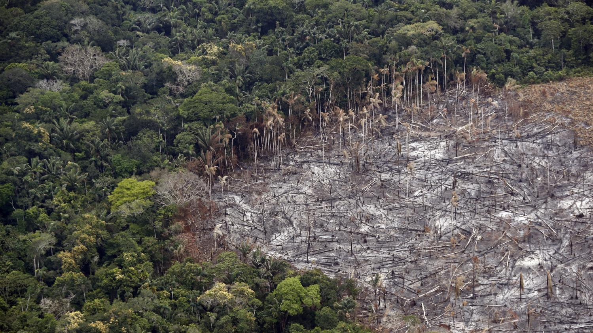

Le panda géant ou grand panda appelé panda, est un mammifère de l’ordre des carnassiers et de la famille des ours, classé dans le sous-groupe Ailuropidae.
| Poids | 80 à 125 kg |
| Longueur queue | 1,50 à 1,80 m |
| Vitesse | Environ 20 mètre / heure |
| Caractéristiques du corps | Fourrure épaisse |
| Couleur du pelage/fourrure | Fourrure noire et blanche ; Pelage blanc avec taches noire unique ; Taches noires autour des yeux et oreilles ; Pattes noires ; Bande noire autour des épaules |
| Bruit/Cri | Bêlement |
| Régime alimentaire/ Type de nourriture | Se nourrit principalement de bambou |
| Vie sociale | Animal solitaire mais supporte bien la compagnie |
| Prédateurs | Le léopard ; Le dhole ; L'ours brun ; le tigre ; La panthère ; L'Homme ! |
| Nom femelle ; Nom du petit | Le panda femelle ; bébé panda |
| Maturité sexuelle | 4 ans : femelle ; 6 ans : mâle |
| Durée de vie | 20 ans : état sauvage |
Aujourd'hui, le panda géant est en voie de disparition mais depuis 2000, sont nombres d'individus à augmenté de 200 grâce en partie aux associations qui essaient de le sauver.

Il y a tout de même des solutions pour éviter que le tigre du Bengale ne disparaise mais pour cela, le gourvernement doit faire un ensemble d'actions :
Aujourd'hui, de nombreuses personnes sont mobilisées pour éviter que le tigre ne dissparaisent. Il existe donc différentes associations qui défendent en partie les tigres comme :
Il existe évidement de nombreuses autres assication qui essaient de préserver et sauver ces tigres.